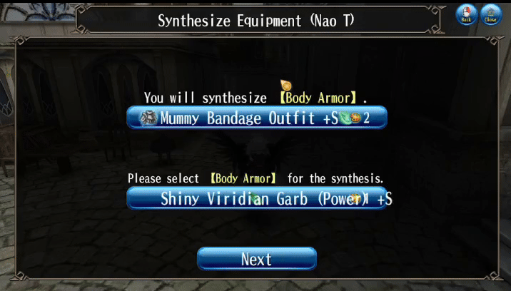

Game Features
Unrestricted character creations!
With more than 500 billion combinations available, feel free to create your own character to your liking!
Sword? Magic? Anything you like!

Enjoy Toram Online on your big computer screen without having to worry about your data usage or battery!
"Unravel the mysteries of a shattered world and forge your own path in a story-rich MMORPG unlike any other."

You can customize your gear any way you like.
